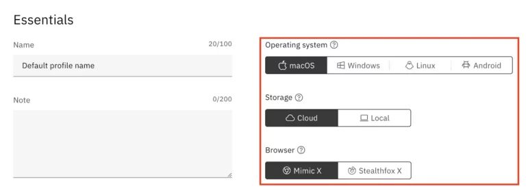

How many profiles should I create first?
Start with a small test batch of around three to five profiles so you can validate your naming, proxy logic, and workflow before scaling.
This beginner tutorial focuses on a clean first setup: choosing the right plan, creating organized profiles, assigning proxies logically, and building habits that make Multilogin easier to scale later.

Most problems with a multi-account browser setup do not begin after month six. They begin on day one. Users create profiles without naming conventions, attach proxies inconsistently, mix workflow purposes, and then wonder why the system feels confusing a week later. Multilogin is powerful, but like most operations tools, it rewards structure. This guide helps you set it up cleanly from the start.
Before opening the dashboard, make sure you are on the right plan. If you are still learning, the 3-day trial is often enough to understand the basics. If you know you need real working capacity, Pro 10 is a practical starting point for solo users. Larger Pro and Business plans make more sense once you know your profile volume and team needs. The goal here is not to maximize profile count. It is to start with enough capacity to build a clean system.
If you are unsure, visit the pricing page first. It explains the current public plan structure in approximate USD and helps you avoid buying more than you need.
Do not create generic profiles with names like "test1" or "new account." Instead, define categories before you build anything. For example, you may have one naming pattern for affiliate profiles, another for social media management profiles, and another for client-specific agency profiles. A simple structure like "Client-Platform-Region-Role" is far better than random labels.
This matters because profile volume grows quickly. A clean naming system makes search, troubleshooting, cloning, and delegation much easier later.
Proxies are part of workflow hygiene, not an afterthought. Whether you use Multilogin's supported bonuses or external proxies, decide on a basic rule set before attaching them to profiles. Some teams prefer one proxy per profile. Others use location-based grouping. The best rule depends on the use case, but the important point is consistency. Randomly changing proxy strategy from profile to profile creates avoidable confusion.
Keep a short written note about what each proxy pool is for. Even if you are working alone, you will thank yourself later when troubleshooting or expanding the setup.
Even if your plan supports many profiles, do not build fifty profiles on day one. Create a small batch first, usually three to five profiles, and test the whole workflow. Launch them, confirm the naming structure feels right, make sure the proxy assignments are consistent, and see whether any extra metadata would help. This "small batch first" method is one of the easiest ways to prevent clutter.
Once the test batch works, you can use cloning and bulk operations with much more confidence. This is where Multilogin's quick cloning value becomes practical rather than theoretical.
One of the fastest ways to damage a clean setup is to mix unrelated work in the same profile system. Personal experiments should not sit beside production client profiles. Team access should not be improvised profile by profile. Decide what belongs in each part of the setup and keep those boundaries clear. If you are on a Business plan, templates and team management features become especially useful here.
You do not need a giant operations manual. A short internal document is enough. Write down the profile naming format, which proxy types map to which workflows, how clones should be named, what actions are allowed inside each profile type, and how archived profiles should be handled. This turns Multilogin from a tool you use into a system you can manage.
This matters even more if multiple people touch the environment. Structured documentation helps preserve the benefits of multiple account management instead of letting the setup become a collection of random habits.
The best Multilogin setups are built around repetition. Ask yourself which tasks you will repeat weekly. Will you create similar profile types often? Will you assign the same proxy pattern to certain categories? Will you need the same naming format across client accounts? If yes, build the setup so repetition feels easy. That is what templates, bulk operations, and clear conventions are for.
Multilogin's broader platform story makes the most sense when you lean into workflow design. That is where the premium value appears.
If you work with a team, define who can create profiles, edit them, launch them, or change proxy assignments. If you work alone, decide how you will back up your logic and keep your setup understandable over time. Good operations depend on clarity as much as features.
The most common mistakes are bad naming, scaling too fast, inconsistent proxy use, and mixing unrelated workflows together. Another common error is assuming that the tool alone guarantees good outcomes. In reality, clean setup discipline is what allows the software to do its job well.
Start small, stay organized, and build conventions before volume. If you follow that rule, Multilogin becomes much easier to scale. If you are ready to start, use coupon AFF5025 and keep the rest of this content cluster nearby for plan, review, and alternatives guidance.

Start with a small test batch of around three to five profiles so you can validate your naming, proxy logic, and workflow before scaling.
The most common mistake is poor organization from the start, especially weak naming conventions and inconsistent proxy assignment.
Use the pricing page and the review page if you want both cost and fit guidance before building profiles.